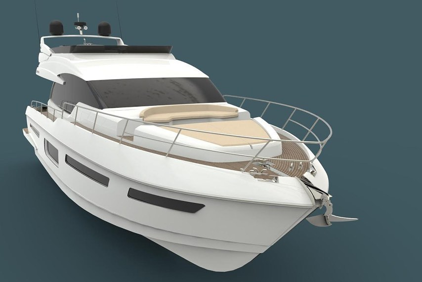

El Astillero Naval Segue, es un astillero de yates de lujo ubicado en San Fernando, Buenos Aires. Fué fundado en 1980 y desde entonces ha construido algunos de los yates más lujosos del mundo. Los yates de Ségue se caracterizan por su diseño elegante, sus materiales de alta calidad y su construcción artesanal. El astillero ofrece una amplia gama de modelos, desde yates pequeños de 30 pies hasta yates grandes de 150 pies. Los mismos están equipados con las últimas tecnologías y comodidades, y ofrecen un lujo incomparable.
Diseño elegante y contemporáneo

Materiales de alta calidad, como madera, acero y fibra de vidrio
Amplia gama de modelos, desde yates pequeños de 30 pies hasta yates grandes de 150 pies